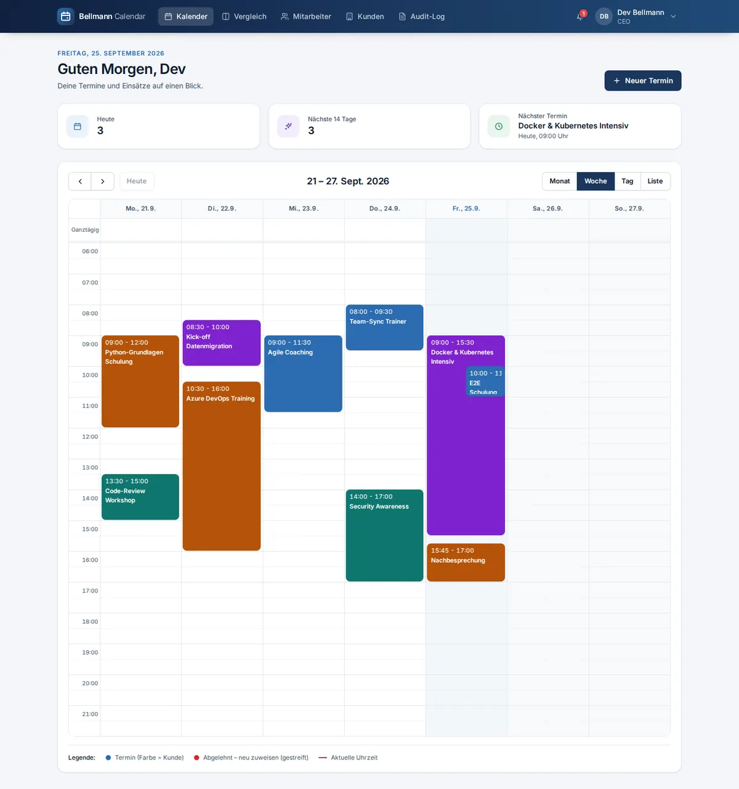
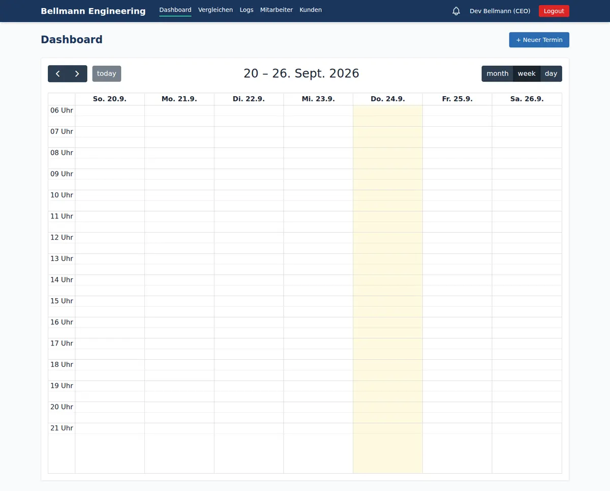
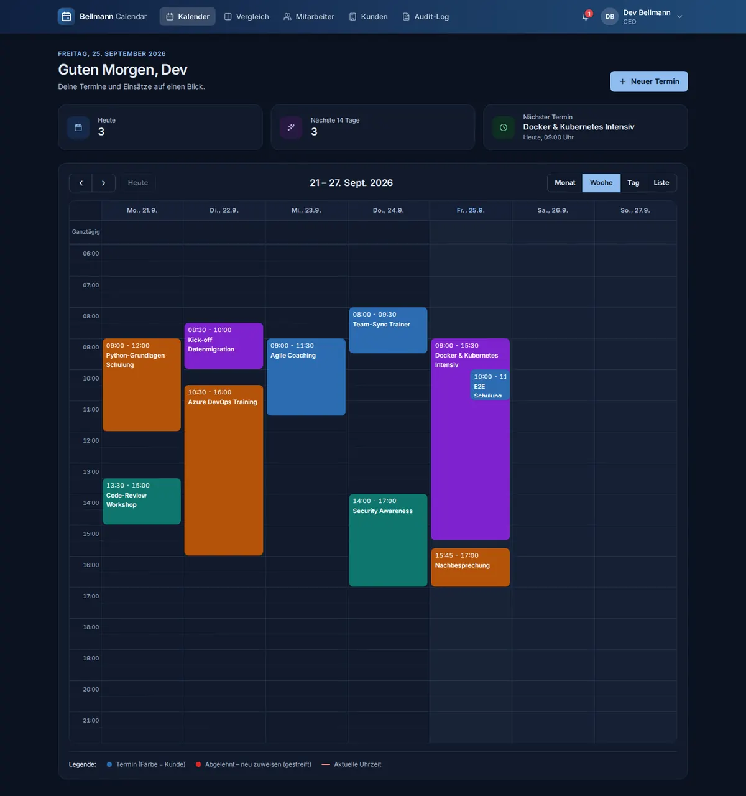
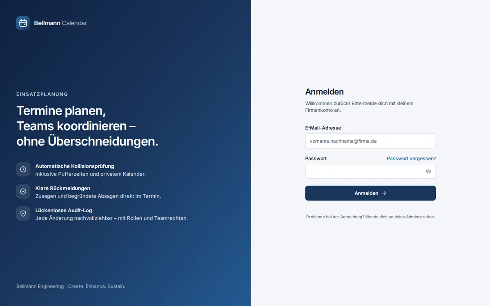
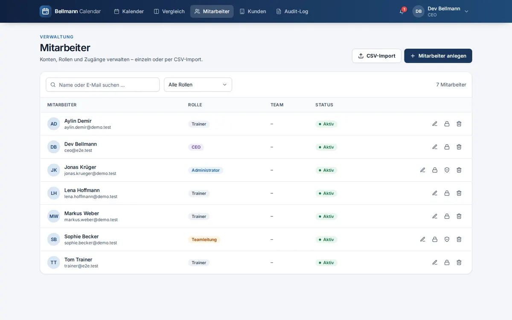
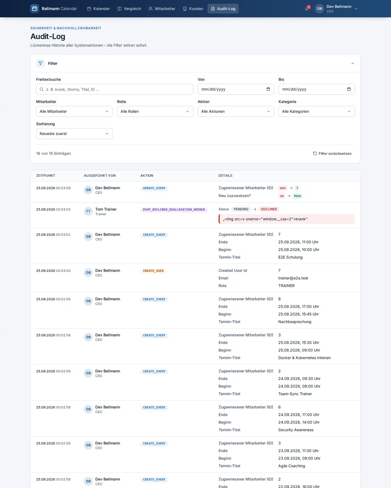
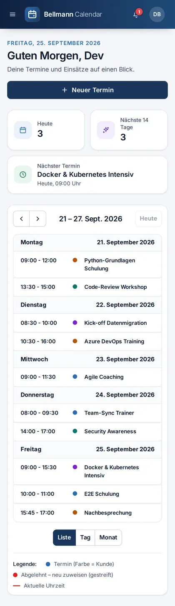

Alles, was du brauchst, um den Kalender der Bellmann Engineering GmbH zu verstehen, zu betreiben und weiterzuentwickeln – mit Diagrammen, echten Code-Beispielen aus dem Projekt, Wissensfragen und geprüften Quellen.
Was ist der Bellmann Engineering Calendar?
Eine Web-Anwendung zur Einsatz- und Terminplanung für die Bellmann Engineering GmbH. Termine werden Mitarbeitern (Trainern) verbindlich zugewiesen – ohne Zu- oder Absage. Das System zeigt auch die Termine aus den Google-Kalendern der Mitarbeiter an, kennt Rollen und Teams und protokolliert jede Änderung im Audit-Log.
… ein Update einspielen und Probleme selbst diagnostizieren.
Tipp für die Praxis Lies einen Artikel, öffne dann die genannten Dateien im Editor und verfolge den Code mit dem Finger. Stelle dir zu jeder Funktion drei Fragen: Was kommt rein? Was geht raus? Was kann schiefgehen?
Vier Bausteine arbeiten zusammen: der Browser, Nginx als Türsteher, die Flask-Anwendung und die PostgreSQL-Datenbank. Alles läuft in Docker-Containern.
Abbildung 1 – Architektur. Klick auf einen Kasten öffnet den passenden Artikel. Von außen erreichbar ist nur Nginx.
Wer macht was?
Baustein
Aufgabe
Datei(en)
Browser
Zeigt die Seiten, lädt Daten per fetch aus der JSON-API.
Warum nicht einfach Flask direkt ins Internet? Der eingebaute Flask-Server ist nur für die Entwicklung gedacht. Nginx kann TLS, Kompression, Rate-Limiting und statische Dateien viel effizienter – und schützt Gunicorn vor langsamen oder böswilligen Clients.
🧠 Wissensfrage
Welcher Baustein ist als einziger direkt vom Browser aus erreichbar?
Richtig ist Nginx. Web-App und Datenbank verwenden in docker-compose.yml nur expose – sie sind ausschließlich im internen Docker-Netzwerk sichtbar.
Was passiert genau, wenn eine Teamleitung im Kalender auf „Speichern“ klickt? Wir verfolgen POST /api/v1/events vom Klick bis zur Antwort.
Abbildung 2 – Ablauf von „Termin anlegen“. Fehler (z. B. 400 ungültige Daten, 403 fehlende Rechte) verlassen den Ablauf früher mit JSON {"error": …}.
Die Schritte im Code
Frontend:apiFetch() in app.js schickt das Formular als JSON, der Browser hängt die HttpOnly-Cookies automatisch an, apiFetch ergänzt den Header X-CSRF-TOKEN.
Nginx entschlüsselt TLS und setzt X-Forwarded-For, damit die App die echte Client-IP kennt (ProxyFix).
Flask-JWT-Extended prüft Signatur, Ablaufzeit und CSRF und ruft load_user() in app/security.py auf.
Routecreate_event() in event_routes.py ruft den Service auf – sie enthält selbst keine Logik.
EventService.create_event() in event_service.py validiert, prüft Rechte, speichert und schreibt das Audit-Log.
Nach dem COMMIT verschickt ein Hook die E-Mail (transaction.py).
🧠 Wissensfrage
Warum wird die E-Mail erst nach dem COMMIT verschickt?
Scheitert der Commit (z. B. Datenbankfehler), wird zurückgerollt – dann darf auch keine „Ihnen wurde ein Termin zugewiesen“-Mail existieren. Zusätzlich blockiert ein langsamer Mailserver so nicht die offene Transaktion.
Der Code ist in Schichten aufgeteilt. Jede Schicht hat genau eine Aufgabe und spricht nur mit der Schicht darunter – so bleibt der Code testbar und verständlich.
Abbildung 3 – Jede Schicht kennt nur die darunterliegende. Klick öffnet einen Beispiel-Artikel.
Regeln für Services
Kein HTTP: Services kennen weder request noch jsonify. Sie geben Tupel zurück: (ergebnis, fehlertext, statuscode).
Eine Transaktion pro Anwendungsfall: Der Service committet selbst.
Nebenwirkungen nach außen (E-Mail, Google) erst nach dem Commit.
# app/routes/event_routes.py – die Route ist nur ein dünner Übersetzerdefcreate_event():
data = request.get_json(silent=True) or {}
event, error_message, status_code = EventService.create_event(data, current_user.id)
if error_message:
return jsonify({"error": "Terminerstellung fehlgeschlagen", "message": error_message}), status_code
return jsonify({"event": serialize_event(event)}), 201
Wo gehört die Regel „Teamleitungen dürfen Termine nur Mitgliedern des eigenen Teams zuweisen“ hin?
Geschäftsregeln gehören in den Service. Eine Prüfung nur im Browser wäre wertlos – jeder kann die API direkt aufrufen. Das Frontend darf die Regel zusätzlich anzeigen, entscheidend ist der Server.
create_app() baut die Anwendung zusammen. Welche Einstellungen gelten, entscheidet die Umgebungsvariable APP_ENV – Werte kommen immer aus der .env, nie aus dem Code.
Was create_app() der Reihe nach macht
Konfigurationsklasse wählen (production, development, testing) und validieren – in Produktion bricht der Start ab, wenn SECRET_KEY oder JWT_SECRET_KEY fehlen oder kürzer als 32 Zeichen sind („Fail-fast“).
ProxyFix: vertraut genau einem Proxy (Nginx) für die echte Client-IP.
JWT-Callbacks und globale Fehler-Handler registrieren.
Blueprints registrieren und /health bereitstellen (prüft auch die Datenbank).
# app/config.py (Auszug)classProductionConfig(BaseConfig):
DEBUG = False# unabhängig von der .env immer aus
@classmethod
defvalidate(cls) -> None:
for name in ("SECRET_KEY", "JWT_SECRET_KEY"):
if len(getattr(cls, name) or"") < 32:
raise RuntimeError(f"{name} fehlt oder ist kürzer als 32 Zeichen.")
Warum ein „Factory“-Muster? Tests können mit create_app(TestingConfig) eine eigene App mit Test-Datenbank erzeugen, Gunicorn und Alembic eine mit Produktionseinstellungen – ohne globale Seiteneffekte beim Import.
Das 12-Factor-Prinzip
Konfiguration gehört in die Umgebung, nicht in den Code. Deshalb liegen alle Werte in der .env (nicht in Git), die Vorlage mit Erklärungen ist .env.example. docker-compose.yml erzwingt zusätzlich APP_ENV=production und FLASK_DEBUG=0.
🧠 Wissensfrage
Was passiert, wenn in Produktion JWT_SECRET_KEY fehlt?
Fail-fast: Ein Standardwert wäre öffentlich bekannt – jeder könnte gültige Tokens fälschen. Lieber gar nicht starten.
Logik je Seite: Login, Kalender, Mitarbeiter, Kunden, Audit-Log, Vergleich, Passwort-Reset
app/templates/*.html
Seitenhüllen (Jinja2) – enthalten kein JavaScript
Wichtige Endpunkte
Methode & Pfad
Zweck
Rollen
POST /api/v1/auth/login
Anmelden, setzt Cookies
alle
GET /api/v1/auth/me
eingeloggter Benutzer
angemeldet
GET /api/v1/events?start=&end=
sichtbare Termine im Zeitraum
angemeldet (gefiltert nach Rolle)
POST / PUT / DELETE /api/v1/events
Termin anlegen / ändern / löschen
CEO, ADMIN, TEAM_LEADER
GET /api/v1/google/events?start=&end=&user_ids=
Termine aus den Google-Kalendern (nur lesend)
angemeldet (gefiltert nach Rolle)
GET /api/v1/events/audit
Audit-Log
CEO, ADMIN
/api/v1/customers
Kunden verwalten
lesen: CEO/ADMIN/TL · schreiben: CEO/ADMIN
/api/v1/auth/users…
Benutzerverwaltung, CSV-Import
CEO, ADMIN
Zeiten Die API liefert alle Zeiten in UTC mit Offset (2026-10-01T08:00:00+00:00). FullCalendar rechnet sie im Browser in die lokale Zeit um. Formulare senden new Date(wert).toISOString().
🧠 Wissensfrage
Warum kann das JavaScript das Anmelde-Token nicht lesen?
HttpOnly-Cookies schickt der Browser automatisch mit, gibt sie aber nie an JavaScript heraus. Selbst eine XSS-Lücke kann das Token so nicht stehlen.
Seit dem 25.09.2026 hat der Kalender der Bellmann Engineering GmbH ein komplett neues Design: einheitliche Komponenten, Dunkelmodus, mobile Ansicht – und dabei schneller und sicherer als vorher.

Abbildung 13 – Das neue Dashboard mit Kennzahlen und Wochenkalender (Demodaten).
Vorher und nachher

Vorher

Nachher – im Dunkelmodus

Anmeldung

Mitarbeiter

Audit-Log

Smartphone (Listenansicht)
Das Designsystem
Farben als Tokens: eine Markenskala um Navy #1A365D und Akzent #2B6CB0. Komponenten nutzen nur semantische Namen (bg-surface, text-fg, border-line, bg-primary …) – so funktioniert der Dunkelmodus automatisch.
Dateien werden ein Jahr gecacht (immutable), nach Updates gibt es automatisch eine neue URL
gzip in Nginx, Skripte mit defer
kleinere Übertragung, kein blockiertes Rendern
FullCalendar nur auf Kalender-Seiten
Mitarbeiter-, Kunden- und Log-Seite laden weniger
Gemessen mit Lighthouse Performance, Barrierefreiheit und Best Practices: jeweils 100 auf allen Seiten, auf Desktop und Mobilgerät.
Regeln für neuen Frontend-Code
Kein Inline-JavaScript und keine style="…"-Attribute – neues Skript = neue Datei unter app/static/js/pages/.
API-Daten nie per innerHTML, sondern mit h() bzw. textContent.
Nur semantische Farb-Tokens verwenden, dann stimmt der Dunkelmodus automatisch.
Nach Änderungen an Klassen: npm run build:css (oder npm run watch:css beim Entwickeln).
🧠 Wissensfrage
Du möchtest auf der Kundenseite einen neuen Knopf mit einer Klick-Aktion einbauen. Wie geht das richtig?
Die CSP (script-src 'self') blockiert Inline-Handler und Inline-Skripte – sie würden schlicht nicht ausgeführt. Außerdem schlägt der Test test_seiten_ohne_inline_javascript fehl.
Wer hat wann welchen Termin gelöscht? Diese Frage muss auch später noch beantwortbar sein. Gelöschte Termine werden in allen Abfragen mit Event.is_deleted.is_(False) ausgefiltert.
Die wichtigste Regel: In der Datenbank und im Python-Code ist jede Zeit UTC mit Zeitzonen-Information. Umgerechnet wird nur an den Rändern.
✗ Verboten
datetime.utcnow() # "naiv": keine Zone
datetime.now() # lokale Zeit, naiv
db.Column(db.DateTime) # timestamp ohne Zone
✓ Projektstandard
datetime.now(timezone.utc) # oder utc_now()
parse_iso_datetime(wert) # naiv = Berlin
db.Column(db.DateTime(timezone=True))
Der Weg einer Uhrzeit
Die Teamleitung wählt im Formular 10:00 (deutsche Ortszeit, Sommerzeit = UTC+2).
Das JavaScript sendet 2026-10-01T08:00:00.000Z (UTC).
parse_iso_datetime() in app/utils/time.py erzeugt ein „aware“ UTC-Datum. Kommt ein Wert ohne Zone, gilt er als Europe/Berlin.
PostgreSQL speichert timestamptz (intern UTC).
Die API liefert 2026-10-01T08:00:00+00:00; FullCalendar zeigt wieder 10:00.
Was früher schiefging Termine wurden als „naive“ Ortszeit gespeichert, der Google-Kalender bekam sie aber als UTC – im Google-Kalender standen sie dadurch zwei Stunden verschoben. Die Migration a7c9e2d4f6b8 hat alle alten Werte korrekt als Berliner Zeit nach UTC umgerechnet.
🧠 Wissensfrage
Ein API-Client sendet "2026-12-24T18:00" ohne Zeitzone. Welche UTC-Zeit wird gespeichert?
Naive Werte gelten als Geschäftszeitzone APP_TIMEZONE=Europe/Berlin. Am 24.12. gilt Winterzeit (UTC+1), also 17:00 UTC.
Zwei Klassiker, die jede ORM-Anwendung irgendwann langsam machen – und wie der Kalender der Bellmann Engineering GmbH sie vermeidet.
Indizes auf Fremdschlüsseln
PostgreSQL legt für Primärschlüssel automatisch einen Index an, für Fremdschlüssel nicht. Ohne Index muss die Datenbank für „alle Termine von Trainer 5“ die ganze Tabelle lesen (Full Table Scan). Deshalb haben alle Fremdschlüssel index=True, und für die häufigste Abfrage – „aktive Termine von Mitarbeiter X im Zeitraum Y“ (Mitarbeiter-Tab, Vergleichsansicht) – gibt es einen zusammengesetzten Index:
db.Index("ix_events_assignee_active_start", "assigned_to_id", "is_deleted", "start_time")
# Reihenfolge = Filterreihenfolge: erst Gleichheit, dann der Bereich
Das N+1-Problem
✗ 1 + N Abfragen
for e in events: # 1 Abfrage
farbe = e.customer.color_hex # +1 je Termin!
✓ 1 Abfrage mit JOIN
Event.query.options(joinedload(Event.customer))
# Kunde kommt im selben SELECT mit
Bei 100 Terminen sind das 101 statt 1 Datenbankaufruf. Der Test test_terminliste_ohne_n_plus_1 in tests/test_events.py zählt die SQL-Statements und schlägt fehl, wenn ihre Anzahl mit der Anzahl der Termine wächst.
Werkzeug
Wann
joinedload()
n:1-Beziehungen (Termin → Kunde, User → Rolle)
selectinload()
1:n-Listen (Team → Mitglieder)
eine Abfrage mit IN (…) + Dictionary
eigene Nachschlage-Mengen, z. B. alle google_event_ids beim Ausfiltern übertragener Google-Termine
🧠 Wissensfrage
Der Mitarbeiter-Tab fragt „alle Termine von Mitarbeiter 5“ ab. Warum hilft dabei der Index (assigned_to_id, is_deleted, start_time)?
Ein zusammengesetzter Index kann für Abfragen auf seine führenden Spalten genutzt werden.
Jede Änderung am Datenbankschema ist eine versionierte Datei in migrations/versions/. db.create_all() ist tabu – es legt nur fehlende Tabellen an und ändert nie bestehende.
Abbildung 5 – Vom geänderten Model zur aktualisierten Datenbank.
Wie Alembic den Stand kennt
Jede Migration hat eine revision und eine down_revision – so entsteht eine Kette. In der Tabelle alembic_version steht, welche Revision die Datenbank hat. upgrade spielt alle fehlenden der Reihe nach ein.
Die Migration a7c9e2d4f6b8 ist „idempotent“ Sie prüft vor jedem Schritt mit dem SQLAlchemy-Inspector, ob Tabelle/Spalte/Index schon existiert. Grund: Ältere Installationen hatten Teile des Schemas bereits über create_all() bekommen. So läuft sie auf einer leeren und auf einer „gewachsenen“ Datenbank fehlerfrei.
🧠 Wissensfrage
Beim Start meldet Alembic Can't locate revision b0287b7f27b8. Was bedeutet das?
Lösung: sichern, dann mit flask db stamp bcf52e20a906 den bekannten Stand setzen und flask db upgrade ausführen (siehe README).
Speichern: Termin, Benachrichtigung an den Mitarbeiter und Audit-Log in einer Transaktion. Die Zuweisung ist verbindlich – es gibt keine Zu- oder Absage.
Nach dem Commit: E-Mail senden und Termin in Google spiegeln.
Teil-Updatesupdate_event() ändert nur Felder, die mitgeschickt werden. "customer_id": null oder "meeting_link": null bedeuten bewusst „entfernen“. Das Audit-Log speichert den Vorher- und Nachher-Stand.
🧠 Wissensfrage
Eine Teamleitung will einen Termin einem Trainer aus einem fremden Team zuweisen. Welche Antwort liefert die API?
can_manage_assignee liefert „Termine dürfen nur Mitgliedern des eigenen Teams zugeordnet werden.“ und der Service antwortet mit 403.
Termine dürfen sich überschneiden – es gibt bewusst keine Kollisionsprüfung. Ein Mitarbeiter hat oft mehrere ganztägige Einträge (Schulung, Prüfung, Urlaub) und dazu stundenweise Termine am selben Tag. Der Kalender zeigt alles nebeneinander, dazu die Termine aus seinem Google-Kalender.
Abbildung 6 – Ein Tag im Kalender: Ganztägige und stundenweise Termine aus App und Google bleiben alle sichtbar.
Woher kommen die Google-Termine?
Das Frontend fragt GET /api/v1/google/events?start=…&end=… ab (fetchGoogleEvents() in app.js). Der Server liest mit GoogleCalendarService.list_events() in calendar_service.py die Termine des zugeordneten Kalenders über die Events-API – Serientermine einzeln aufgelöst, abgesagte ausgelassen.
Warum nicht Frei/Belegt? Früher nutzte die App die Free/Busy-API. Die liefert keine Titel – und ganztägige Einträge sind in Google standardmäßig „Frei“, fehlen dort also komplett. Genau die Schulungen wären unsichtbar geblieben. Deshalb braucht das verbundene Konto jetzt mindestens das Recht „Alle Termindetails sehen“.
Keine Dopplungen
Die App überträgt ihre eigenen Termine in den Google-Kalender des Mitarbeiters (Google-Kalender). Beim Lesen würden sie sonst doppelt erscheinen. Zwei Sicherungen verhindern das:
Jeder übertragene Termin trägt in Google die Markierung extendedProperties.private.bellmann_app – solche Einträge überspringt _termin_aus_google().
Ältere Kopien ohne Markierung erkennt die Route an der gespeicherten events.google_event_id.
Kalender anderer Mitarbeiter (Tabs)
CEO, Administration und Teamleitung sehen über dem Kalender Tabs: „Alle Termine“ und je Mitarbeiter einen Tab. Ein Mitarbeiter-Tab zeigt dessen App-Termine und seinen Google-Kalender – ohne sich als er anzumelden. Der Tab steht in der URL (/dashboard?mitarbeiter=2), neue Termine aus dem Tab sind ihm gleich zugewiesen. Wer wessen Google-Termine sehen darf, prüft der Server mit denselben Regeln wie bei Terminen (_sichtbare_benutzer_ids()): Teamleitung nur das eigene Team, Trainer nur sich selbst.
Lektion aus der alten Kollisionsprüfung
Die frühere Kollisionsprüfung enthielt den größten Bug des Projekts – eine SQLAlchemy-Falle, die überall lauert, wo in Abfragen gefiltert wird:
✗ Vorher
Event.query.filter(
Event.assigned_to_id == uid,
not Event.is_deleted)
Warum das fatal war Python wertet not Event.is_deleted sofort aus – ein Objekt ist „wahr“, also ergibt not …False. Die Abfrage wurde zu WHERE … AND false und fand nie etwas. SQLAlchemy kann == und < überladen, Pythons not, and, or aber nicht – deshalb gibt es is_(), not_(), and_(), or_().
🧠 Wissensfrage
In Thorbens Google-Kalender steht eine mehrtägige Schulung als ganztägiger Eintrag. Warum war sie mit der alten Frei/Belegt-Abfrage nicht zu sehen?
Frei/Belegt kennt nur „belegt“. Ein als „Frei“ markierter Eintrag – bei ganztägigen Terminen die Voreinstellung – taucht dort gar nicht auf. Die Events-API liefert dagegen jeden Eintrag.
Termine werden Mitarbeitern verbindlich zugewiesen – sie sagen nicht zu oder ab. Die Planung sieht auf einen Blick diese und nächste Woche und kann über Tabs in den Kalender jedes Mitarbeiters schauen.
Abbildung 7 – Standardansicht „2 Wochen“: Jede Tageszelle zeigt alle Termine – mehrere ganztägige und stundenweise.
Die Ansichten
Standard:twoWeeks – eine eigene FullCalendar-Ansicht (dayGrid, Dauer 2 Wochen, dateAlignment: "week"). „Heute“ und die Pfeile springen immer auf einen Montag.
Smartphone: dieselben zwei Wochen als Liste (listTwoWeeks).
Woche, Tag und Monat bleiben als Umschalter erhalten (CUSTOM_VIEWS in dashboard.js).
Verbindliche Zuweisung
Die Planung legt einen Termin an und wählt den Mitarbeiter – fertig. Es gibt keinen Status „offen“, „zugesagt“ oder „abgelehnt“.
Der Mitarbeiter bekommt eine In-App-Benachrichtigung und eine E-Mail, der Termin wird in seinen Google-Kalender übertragen.
Soll jemand anderes den Termin übernehmen, ändert die Planung im Dialog „Bearbeiten“ den Mitarbeiter – die Google-Kopie zieht mit um.
Wird ein Mitarbeiter gelöscht, bleiben seine Termine als „Nicht zugewiesen“ stehen und können über „Bearbeiten“ neu vergeben werden.
Früher gab es Rückmeldungen (RSVP) mit Pflichtbegründung bei Absage und eine rote Markierung „abgelehnt – neu zuweisen“. Das war nie eine Anforderung; die Migration f2a3b4c5d6e7 hat Tabelle und Markierung entfernt.
🧠 Wissensfrage
Ein Trainer soll einen bereits zugewiesenen Termin nicht mehr machen. Was tut die Planung?
Zugewiesen wird nur von der Planung. Beim Wechsel des Mitarbeiters entfernt die App die Google-Kopie beim alten und legt sie beim neuen an.
Jede Benachrichtigung entsteht zweifach: als Eintrag für das Glocken-Symbol und als E-Mail. Die E-Mail geht aber erst raus, wenn die Datenbank-Transaktion erfolgreich war.
Abbildung 8 – Nebenwirkungen nach außen erst nach dem Commit.
Warum so kompliziert?
Konsistenz: Keine Mail über einen Termin, der nie gespeichert wurde.
Geschwindigkeit: Ein langsamer Mailserver blockiert weder die Transaktion noch den Benutzer.
Robustheit: Fehler beim Versand werden geloggt, brechen aber nie die Anfrage ab.
Ohne SMTP keine Mails Solange SMTP_SERVER, SMTP_USER und SMTP_PASSWORD in der .env leer sind, wird der Versand still übersprungen – auch „Passwort vergessen“ und Einladungen funktionieren dann nicht.
🧠 Wissensfrage
Innerhalb des after_commit-Hooks möchte jemand noch schnell einen Datensatz aktualisieren. Geht das?
Die Session ist in diesem Moment nicht in einer aktiven Transaktion. Deshalb dürfen die Callbacks nur „nach außen“ sprechen (SMTP, HTTP). Die Google-ID wird darum mit einem eigenen, zweiten Commit nachgetragen.
Kai verbindet einmalig sein Google-Konto. Danach sieht die App alle Kalender, die er in Google Kalender sieht, und sie werden den Mitarbeitern zugeordnet – „ein Schlüssel für alle Kalender“.
Der Anmeldeablauf (OAuth 2.0 mit PKCE)
Abbildung 15 – Einmaliges Verbinden des Google-Kontos. Danach erneuert die App ihr Access-Token selbstständig mit dem Refresh-Token.
Begriff
Bedeutung
Access-Token
kurzlebiger Ausweis (ca. 1 Stunde), wird automatisch erneuert und nur im Arbeitsspeicher gehalten
Refresh-Token
dauerhafter Zugang – verschlüsselt in google_connections (Fernet, Schlüssel aus SECRET_KEY abgeleitet), beim Trennen bei Google widerrufen
state
Zufallswert, der beweist, dass die Rückkehr zu unserer Anmeldung gehört
PKCE
„Proof Key for Code Exchange“: Wer den Code aus der Weiterleitung abfängt, kann ihn ohne den geheimen Verifier nicht einlösen
Warum eine eigene Session für den Rückweg? Die Login-Cookies sind SameSite=Strict – der Browser schickt sie bei der Weiterleitung von google.com nicht mit. Den state merkt sich die App deshalb in einem eigenen, signierten Cookie mit SameSite=Lax, das bei normalen Weiterleitungen mitkommt.
Synchronisierung
Nach jeder Änderung entscheidet google_sync_service.py, was in Google passieren muss. Dafür merkt sich jeder Termin, in welchem Kalender seine Kopie liegt (google_sync_calendar_id).
Ereignis
Aktion in Google
Termin angelegt und zugewiesen
Kopie im Kalender des Mitarbeiters anlegen
Zeit, Titel oder Beschreibung geändert
Kopie ändern
Anderem Mitarbeiter zugewiesen
beim alten löschen, beim neuen anlegen
Termin gelöscht
Kopie löschen
Anzeige
Im Dashboard (auch im Tab eines Mitarbeiters) und in der Vergleichsansicht erscheinen die Termine des zugeordneten Google-Kalenders mit Titel, gestrichelt und nur lesend – Details in Überschneidungen & Google-Termine.
Wer wessen Termine sieht, folgt denselben Regeln wie bei App-Terminen.
Antworten werden 60 Sekunden zwischengespeichert (GOOGLE_EVENTS_CACHE_SECONDS).
Es gibt keine Kollisionsprüfung – Google-Termine blockieren nichts.
Einrichtung Die Schritt-für-Schritt-Anleitung (Google Cloud Console, OAuth-Client, .env) steht in der README im Abschnitt „Google-Kalender anbinden“. Wichtig: App auf „In Produktion“ stellen – im Testmodus laufen die Zugänge nach 7 Tagen ab.
🧠 Wissensfrage
Warum reicht ein einfacher Google-API-Key nicht, um die Kalender der Mitarbeiter zu lesen?
Private Kalender brauchen die Zustimmung einer Person (OAuth) – hier die von Kai, der die Kalender der Mitarbeiter bereits geteilt bekommen hat.
Nach dem Login liegt das Sitzungs-Token in einem HttpOnly-Cookie, das JavaScript nicht lesen kann. Gegen gefälschte Anfragen von fremden Seiten schützt zusätzlich ein CSRF-Token.
Abbildung 9 – Login, geschützte Anfrage und automatisches Verlängern der Sitzung durch apiFetch().
Die Cookie-Einstellungen
Attribut
Wirkung
HttpOnly
JavaScript kann das Token nicht lesen → XSS kann es nicht stehlen.
Secure
Cookie nur über HTTPS (COOKIE_SECURE=1).
SameSite=Strict
Der Browser schickt das Cookie nie bei Anfragen, die von fremden Seiten ausgelöst werden.
CSRF-Double-Submit
Bei POST/PUT/DELETE muss der Wert des lesbaren Cookies csrf_access_token zusätzlich im Header X-CSRF-TOKEN stehen – das kann eine fremde Seite nicht.
Sofortige Wirkung Weil load_user() den Benutzer bei jeder Anfrage aus der Datenbank lädt, wirken Deaktivierung und Rechteentzug sofort – nicht erst, wenn das Token abläuft. Eine Token-Sperrliste ist dadurch überflüssig.
🧠 Wissensfrage
Ein Admin wird zum Trainer herabgestuft, während er eingeloggt ist. Was passiert bei seinem nächsten Aufruf des Audit-Logs?
Früher stand die Rolle im Token („Claim“) – ein Herabgestufter behielt seine Rechte bis zum Ablauf. Jetzt entscheidet die Datenbank.
Rechteausweitung (Privilege Escalation) Früher prüfte update_user() die Hierarchie nicht: Ein Admin konnte sich selbst zum CEO machen, das CEO-Passwort ändern oder per CSV CEO-Konten anlegen. Heute fragt jede verändernde Methode AuthorizationService.can_manage_user(actor, target, neue_rolle). Die Tests in tests/test_users.py stellen sicher, dass das so bleibt.
# Kern der Regel (vereinfacht)if actor_rolle == "ADMIN":
if ziel is not actor and rang(ziel) >= rang("ADMIN"): # andere Admins / CEOreturnFalse, "Ein Admin darf keine anderen Admins oder den CEO verwalten."if neue_rolle and rang(neue_rolle) >= rang("ADMIN") and not rolle_unverändert:
returnFalse, "Ein Admin darf nur die Rollen TRAINER und TEAM_LEADER vergeben."
🧠 Wissensfrage
Warum reicht es nicht, im Frontend den „CEO“-Eintrag im Rollen-Dropdown auszublenden?
Das Frontend ist Komfort, keine Sicherheit. Berechtigungen werden immer serverseitig geprüft.
XSS bedeutet: Ein Angreifer schmuggelt JavaScript in Daten, die später im Browser eines anderen Benutzers ausgeführt werden. Die Regel dagegen ist einfach: Daten nie als HTML behandeln.
Der echte Angriffsweg in diesem Projekt
Ein Trainer lehnt einen Termin ab und schreibt als Begründung <img src=x onerror="…">.
Die Begründung landet in der Benachrichtigung des CEO.
Früher wurde sie per innerHTML eingefügt → der Browser führte den Code mit der Sitzung des CEO aus.
Passwörter und Schlüssel gehören ausschließlich in die .env. Was einmal in Git landet, ist für immer im Verlauf – auch nach dem Löschen.
Der Vorfall vom 24.09.2026
Was passiert war Die .env war früher versioniert, und setup.sh enthielt feste Werte für JWT-Schlüssel, Datenbank- und Admin-Passwort. Mit dem JWT-Schlüssel hätte jeder mit Zugriff auf das Repository ein gültiges CEO-Token fälschen können. Das CEO-Konto nutzte sogar noch das öffentliche Standardpasswort.
Die Aufräumarbeiten
Rotieren (das Wichtigste): neuer SECRET_KEY, JWT_SECRET_KEY, Datenbank-Passwort (ALTER USER) und CEO-Passwort. Alte Werte sind damit wertlos.
Ein Passwort wurde versehentlich gepusht. Was ist der wichtigste erste Schritt?
Löschen oder Umschreiben hilft nicht gegen Kopien, die schon jemand gezogen hat. Nur ein neues Passwort macht das alte wertlos. Das Aufräumen im Verlauf kommt danach.
Früher setzte „Passwort vergessen“ sofort ein neues Passwort und schickte es im Klartext per E-Mail – jeder konnte so fremde Konten sperren. Heute gibt es einen signierten Link, der nur einmal funktioniert.
So funktioniert der Token
Inhalt: Benutzer-ID, Zweck (reset oder invite) und ein Fingerabdruck des aktuellen Passwort-Hashes.
Signiert mit SECRET_KEY (itsdangerous) – nicht fälschbar.
Gültig 30 Minuten (Reset) bzw. 72 Stunden (Einladung).
Einmalig: Nach dem Ändern passt der Fingerabdruck nicht mehr – ganz ohne zusätzliche Datenbanktabelle.
Keine User-Enumeration Die Antwort auf „Passwort vergessen“ ist immer gleich – egal ob die E-Mail existiert. Auch der Login dauert bei unbekannter Adresse gleich lang (Dummy-Hash), damit niemand über die Antwortzeit herausfindet, wer registriert ist.
🧠 Wissensfrage
Warum wird der Reset-Link nach der Benutzung automatisch ungültig?
Neues Passwort = neuer Hash = anderer Fingerabdruck → der alte Token wird abgelehnt.
Wer tausende Passwörter durchprobieren will, wird gebremst – zweifach: in Nginx für alle Worker gemeinsam und zusätzlich in Flask.
Endpunkt
Nginx (pro IP)
Flask-Limiter (pro IP, pro Worker)
/api/v1/auth/login
20/min, Spitze 20
30/min
/auth/forgot-password
20/min, Spitze 5
5/min
/auth/reset-password
20/min, Spitze 5
10/min
/auth/csv
–
10/Stunde
Die echte Client-IP Hinter Nginx sähe die App nur die IP des Nginx-Containers – alle Benutzer teilten sich ein Limit, und die ganze App wäre nach wenigen Klicks gesperrt (genau das war früher der Fall). ProxyFix(x_for=1) übernimmt die echte IP aus X-Forwarded-For. Warum 1? Wer mehr Proxys vertraut, erlaubt Clients, sich per gefälschtem Header eine beliebige IP zu geben.
Warum keine globalen Limits? Viele Kollegen sitzen hinter derselben Büro-IP (NAT). Ein allgemeines Limit würde sie gegenseitig aussperren. Deshalb gibt es Limits nur an den sensiblen Endpunkten.
🧠 Wissensfrage
Warum reicht Flask-Limiter mit memory:// allein nicht?
Nginx zählt prozessübergreifend. Für gemeinsame Zähler in der App gäbe es RATELIMIT_STORAGE_URI=redis://….
Der Client erfährt nie Details eines Fehlers – das Log dagegen alles. So verrät die App Angreifern nichts und das Team kann trotzdem jedes Problem nachvollziehen.
✗ Vorher
except Exception as e:
returnNone, f"Datenbankfehler: {e}", 500# SQL, Tabellen- und Constraint-Namen# landeten im Browser
Gunicorn startet 3 Prozesse (Worker) mit je 4 Threads – also 12 gleichzeitige Anfragen. Jeder Worker hat seinen eigenen Pool an Datenbankverbindungen.
Abbildung 11 – 3 × (5 + 2) = höchstens 21 Datenbankverbindungen, weit unter dem PostgreSQL-Standard von 100.
Warum „gthread“ und nicht „sync“?
Die App wartet meistens: auf die Datenbank, auf Google (0,2–1 s), früher auch auf SMTP. Mit sync und 3 Workern gäbe es nur 3 gleichzeitige Anfragen – drei langsame Google-Aufrufe und die ganze App steht. Threads geben beim Warten auf I/O das GIL frei, also bringen sie hier echten Gewinn.
Einstellung
Wert
Warum
workers / threads
3 / 4
12 parallele Anfragen bei geringem Speicherbedarf (per Env anpassbar)
pool_size + max_overflow
5 + 2
pool_size ≥ Threads, sonst warten Threads auf Verbindungen
pool_pre_ping
an
erkennt tote Verbindungen (z. B. nach DB-Neustart)
pool_recycle
1800 s
erneuert Verbindungen, bevor Firewalls sie still kappen
timeout
60 s
Nginx wartet 65 s – so bricht Gunicorn zuerst ab
max_requests
1000 ± 100
Worker recyceln gegen schleichende Speicherlecks
🧠 Wissensfrage
Warum ist preload_app = False wichtig?
Beim Fork würden sonst alle Worker dieselben offenen Datenbank-Sockets erben – das führt zu vermischten Antworten und Fehlern.
Nginx liefert die Anwendung nur verschlüsselt aus, setzt Sicherheits-Header für jede Antwort und begrenzt Größe und Dauer von Anfragen.
HTTPS
http://…:8080 → 301-Umleitung auf https://…:8443.
Nur TLS 1.2 und 1.3. Lokal ein selbstsigniertes Zertifikat (scripts/generate_dev_cert.sh), in Produktion z. B. Let's Encrypt – gleiche Dateinamen unter nginx/certs/.
HSTS („nur noch HTTPS“) wird für echte Domains gesendet, für localhost bewusst nicht – sonst würde der Browser jeden lokalen Entwicklungsserver auf HTTPS zwingen.
Security-Header
Header
Schützt vor
Content-Security-Policy
Einschleusen fremder Skripte (XSS) – der Browser führt nur erlaubte Quellen aus
Nur Skriptdateien vom eigenen Server. Kein Inline-JavaScript, keine onclick-Attribute, keine CDNs. Selbst wenn ein Angreifer HTML einschleust, führt der Browser es nicht aus.
style-src … sha256-47DEQ…
Stylesheets vom eigenen Server. Der Hash gehört zum leeren String: FullCalendar legt ein leeres <style>-Element an und füllt es per insertRule – eingeschleustes CSS bleibt trotzdem blockiert.
font-src 'self' data:
Schrift „Inter“ selbst gehostet; data: für die eingebettete Icon-Schrift von FullCalendar.
frame-ancestors 'none'
moderner Ersatz für X-Frame-Options gegen Clickjacking
Vorher → nachher Früher erlaubte die Policy 'unsafe-inline' sowie cdn.tailwindcss.com und cdn.jsdelivr.net. Seit dem Redesign vom 25.09.2026 liegt alles JavaScript in Dateien, Tailwind wird beim Build kompiliert und FullCalendar selbst ausgeliefert – dadurch konnte 'unsafe-inline' für Skripte komplett entfallen. Ein Test in test_platform.py stellt sicher, dass keine Seite wieder Inline-JavaScript enthält.
Kompression und Caching
Nginx komprimiert CSS, JavaScript, JSON und SVG per gzip. Statische Dateien werden mit Inhalts-Hash eingebunden (app.css?v=3fa2c1d0) und dürfen dann ein Jahr gecacht werden – siehe Oberfläche & Designsystem.
Grenzen und Zeitlimits
client_max_body_size 2m (passt zum CSV-Import), client_body_timeout 15s gegen „Slowloris“-Angriffe, proxy_read_timeout 65s, server_tokens off (Version wird nicht verraten).
🧠 Wissensfrage
Warum warnt der Browser bei https://localhost:8443?
Keine bekannte Zertifizierungsstelle hat unterschrieben. Mit einem echten Zertifikat (oder mkcert) verschwindet die Warnung.
Die drei wichtigsten Abläufe im Betrieb – jeweils mit einem Befehl.
Erstinstallation
git clone https://github.com/bellmann-engineering/be-calendar.git
cd be-calendar
./setup.sh # .env mit Zufalls-Secrets, Zertifikat, Container, Rollen, CEO-Zugang
Update einspielen
git pull
./scripts/backup_db.sh vor-update
docker compose up -d --build # Migrationen laufen beim Start automatisch
docker compose ps # web muss "healthy" werden
Sicherung und Wiederherstellung
./scripts/backup_db.sh [kennzeichnung] # → ~/bellmann-backups/*.dump (Rechte 600, die letzten 20)# Wiederherstellen – überschreibt die aktuelle Datenbank!
docker exec -i bellmann_db sh -c 'pg_restore --clean --if-exists -U "$POSTGRES_USER" -d "$POSTGRES_DB"' < DATEI.dump
Warum außerhalb des Projekts? Dumps enthalten Passwort-Hashes und Personendaten. Im Projektordner könnten sie versehentlich in Git oder einem Code-Export landen.
Ein Backup, das nie getestet wurde, ist kein Backup.backup_db.sh prüft jede Sicherung sofort mit pg_restore --list. Probiere die Wiederherstellung trotzdem regelmäßig auf einer Testumgebung aus.
🧠 Wissensfrage
In welcher Reihenfolge spielt man ein Update mit Datenbank-Migration ein?
Die Migration läuft beim Start des Containers – das Backup muss also davor passieren.
56 Tests prüfen die API und die Auslieferung der Seiten von außen – gegen eine echte PostgreSQL. Jeder Lauf baut das Schema über alle Migrationen neu auf und testet damit auch diese.
Bei jedem Push prüft GitHub den Code automatisch. Ein Schritt startet nur, wenn der vorige grün ist – so landet nur geprüfter Code als Image in der Registry.
Abbildung 12 – Die Pipeline aus .github/workflows/ci.yml. Images landen in ghcr.io/bellmann-engineering/be-calendar.
🧠 Wissensfrage
Ein Test schlägt in der CI fehl. Was passiert mit dem Docker-Image?
Was bei der Prüfung gefunden und behoben wurde – eine gute Lektion darüber, welche Fehler in echten Projekten vorkommen.
Schwere
Befund
Lösung
kritisch
Kollisionsprüfung fand nie etwas (not Event.is_deleted)
is_(False), Prüfung komplett in SQL, Regressionstest
kritisch
Secrets in Git und in setup.sh, CEO mit Standardpasswort
alles rotiert, Verlauf bereinigt, Zufalls-Secrets
kritisch
Tabellen/Spalten ohne Migration (Schema-Drift)
idempotente Migration a7c9e2d4f6b8
kritisch
Admin konnte sich zum CEO befördern
can_manage_user() + Tests
kritisch
Gespeichertes XSS über Ablehnungsgründe, Token im localStorage
Escaping, HttpOnly-Cookies, CSP
kritisch
Rate-Limit teilte sich eine IP (Nginx) → App nach wenigen Klicks gesperrt
ProxyFix, gezielte Limits, Nginx-limit_req
hoch
Passwort-Reset ohne Bestätigung, Passwort im Klartext per Mail
signierte Einmal-Links
hoch
Fehlertexte mit SQL an den Client, kein globaler Error-Handler
app/errors.py, JSON-Logging
hoch
Mails in offener Transaktion, doppelte Benachrichtigungen
After-Commit-Hook, Thread-Pool
mittel
N+1-Abfragen, fehlende Indizes, naive Zeitstempel
joinedload, Indizes, timestamptz
mittel
DB-Port offen, Container als root, kein TLS
expose, UID 10001, HTTPS mit Nginx
25.09.
Oberfläche wirkte veraltet, CSP brauchte 'unsafe-inline' und CDNs
Redesign mit Designsystem, Tailwind-Build, selbst gehostetes FullCalendar, strikte CSP, Lighthouse 100
25.09.
Kollisionsprüfung und Zu-/Absagen waren nie Anforderungen; ganztägige Google-Termine („Frei“) fehlten in der Anzeige
Kollisionsprüfung, Pufferzeiten und Rückmeldungen (RSVP) entfernt, Google-Termine mit Titel über die Events-API, Mitarbeiter-Tabs für Planer, Standardansicht „2 Wochen“
niedrig
keine Tests, keine CI, ungepinnte Pakete, print(), spanische Texte
Tests, GitHub Actions, Pins, Logging, Deutsch
Die wichtigste Lehre Die gefährlichsten Fehler werfen keine Fehlermeldung: Die (inzwischen entfernte) Kollisionsprüfung „funktionierte“ still falsch, die Secrets lagen still im Verlauf. Deshalb braucht jedes Projekt Tests, die das erwartete Verhalten prüfen – nicht nur, ob der Code läuft.
Glossar
Die wichtigsten Fachbegriffe kurz erklärt.
Begriff
Erklärung
Alembic
Werkzeug für versionierte Datenbank-Migrationen (über Flask-Migrate).
Application Factory
Funktion create_app(), die eine konfigurierte Flask-App erzeugt.
Audit-Log
Unveränderliche Historie aller wichtigen Aktionen (wer, was, wann).
Blueprint
Gruppe zusammengehöriger Flask-Routen mit gemeinsamem URL-Präfix.
CSRF
Cross-Site Request Forgery – eine fremde Seite löst Aktionen im Namen des Benutzers aus.
CSP
Content Security Policy – Header, der festlegt, welche Skripte der Browser ausführen darf.
Fail-fast
Bei fehlerhafter Konfiguration sofort abbrechen statt mit unsicheren Standardwerten weiterzulaufen.
Fremdschlüssel
Spalte, die auf den Primärschlüssel einer anderen Tabelle verweist.
gthread
Gunicorn-Worker-Typ mit mehreren Threads pro Prozess.
HttpOnly
Cookie-Attribut: JavaScript kann das Cookie nicht lesen.
Idempotent
Mehrfach ausführbar mit gleichem Ergebnis (z. B. die Migration a7c9e2d4f6b8).
Index
Datenstruktur, mit der die Datenbank Zeilen schnell findet, ohne die ganze Tabelle zu lesen.
JWT
JSON Web Token – signierter Ausweis mit Benutzer-ID und Ablaufzeit.
N+1-Problem
Eine Abfrage für die Liste plus je eine weitere pro Element.
ORM
Object-Relational Mapping – Tabellen als Python-Klassen (SQLAlchemy).
Rate-Limiting
Begrenzung der Anfragen pro Zeit und Client.
Reverse Proxy
Server vor der Anwendung, der Anfragen annimmt und weiterleitet (Nginx).
Soft-Delete
Datensatz wird als gelöscht markiert statt physisch entfernt.
timestamptz
PostgreSQL-Zeitstempel mit Zeitzone (intern UTC).
TLS
Verschlüsselung der Verbindung (das „S“ in HTTPS).
WSGI
Schnittstelle zwischen Python-Webanwendung und Webserver (Gunicorn).
XSS
Cross-Site-Scripting – eingeschleustes JavaScript läuft im Browser anderer Benutzer.
Quellensammlung
Die besten Anlaufstellen zum Weiterlernen, nach Thema sortiert.